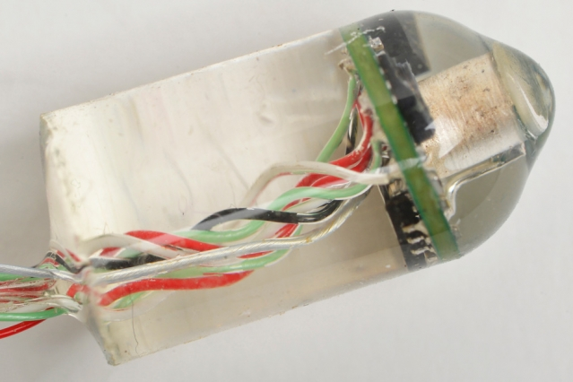

Projects powered by innovative signal processing
Airborne Laser Mine Detection System (ALMDS) - US Navy
ALMDS operates at very high data rates as the LIDAR sweeps a huge volume as the helicopter flies at 60 knots. The founder developed and is the first patent holder of the automatic target recognition system that finds underwater explosive mines in the ALMDS LIDAR data.
Enterophone
The founder developed the Enterophone software that estimates heart rate and breathing rate from data received from a tiny onboard hydrophone. The Enterophone received the 2016 R&D 100 award.
